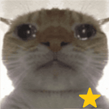

⭐ Star Student BlitzBest:—
Lessons
Round & audio
Recent rounds
Time60+1s
Score0
Streak 0
What does it mean?
TIME’S UP · FINAL SCORE0
Review wrong answers

⭐ Star Student BlitzWhat does it mean?
The timer is stopped.
Press Esc to resume